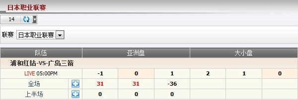

亞洲盤/大小盤/滾球
顯示總代理根據亞洲盤/大小盤/滾球之投注類型的輸贏 (圖1.1)。

圖 1.1
注:
- 若 賠率 < 0
- 如果會員贏那賠率 = 1。
- 如果會員輸那賠率 = |當前賠率|。
- 若 賠率 > 0
- 如果會員贏那么賠率 = 當前賠率。
- 如果會員輸那么賠率 = 1。
在這個例子中, 會員投注於 浦和紅鑽 -vs- 廣島三箭, 投注額 = 120, 賠率 = 0.86, 總代理佔成 = 30%, 代理佔成 = 40%, 投注類型 = 亞洲盤, 會員選擇: 廣島三箭0.5.
- 若 (主隊比分 - 客隊比分) > 0 那麼會員會輸。
--> 總代理會赢: 120 * 30% = 36.
- 若 (主隊比分- 客隊比分) <= 0 那麼會員會輸。
--> 總代理會輸: 120 * 0.86 * 30% = 31.